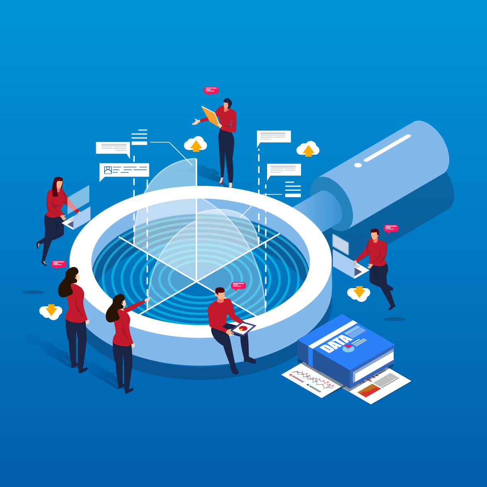
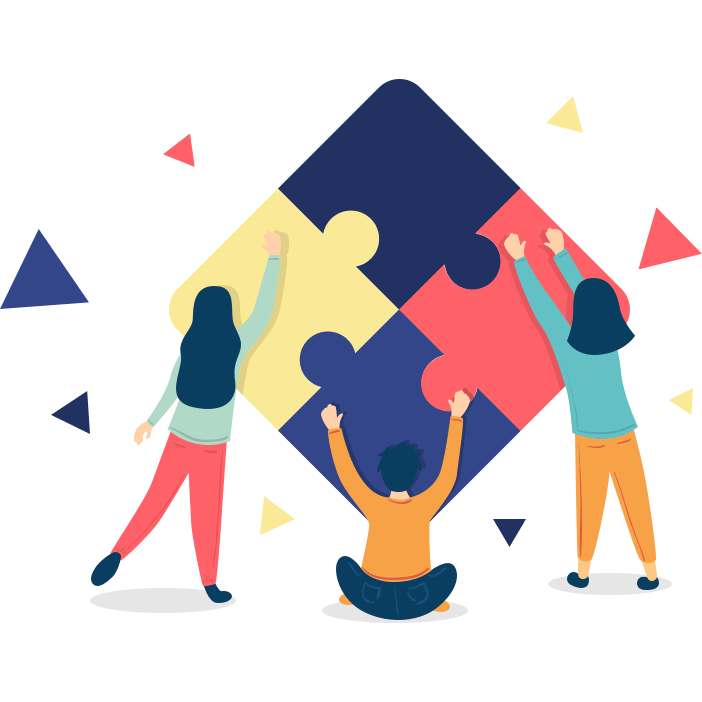

PROJECT
Go to:
- Project Description
- Aims
- Plans & Progress
- Roles
- Scope & Limits
- Tools & Technologies
- Testing
- Risks
- Group processes & communications
- Timeframe
Protoype
Click here to view prototype on figma
Project Description
Topic
We propose to create an app that eases stress off people struggling to get a gift for someone whether they’re a friend, loved one or colleague. We aim to use technology to improve our everyday lives and take away stresses that can be solved through applications. GiftIt acts like your personal assistant and enables you to connect with others, get to know a bit more about their preferences, keep track of key events such as their birthday and store purchases that you may have made for them.
It assists those who have busy lives and don’t have the time to organise presents, simplifying the process and giving them heaps of choices to select from. For people who work full-time this becomes very stressful and our app ‘GiftIt’ will ease the stress and allow buying a loved one a present an efficient process. We want to ensure no one's celebration is forgotten because we feel for those who go home and have forgotten presents for their friends and family.
Motivation
The motivation for this project is that we wanted to create an app that would help others improve their lives. In the world today mental health is a huge issue, we want to do anything to decrease the worry which is where our project comes into play. Thinking of a gift for someone can elicit worry due to the chance that the recipient may not enjoy our gift, which is why our team wants to take away that uncertainty by making it easier for users to understand the likes and dislikes of their peers. This project serves the purpose of making it easier for people to form and maintain meaningful relationships through the act of buying a gift or spending time doing the things that Although this doesn’t solve all our everyday stresses it solves one. We will continue to work on decreasing stresses and worries in our lives by using technology to help us. This project would show a future employer not only are you into technology and have the skills but you want to use it to change the world for the better.
Landscape
One of our main competitors will be ‘Gift List’ which is an app that helps individuals organise the gifts they are going to buy for Christmas. This app is more of a Christmas theme and has a partnership with Amazon which makes suggestions on gift ideas. Whereas our app ‘GiftIt’ doesn’t have a particular season or event and the gift suggestions come from what people have put into their profile which includes sections on interests, hobbies, taste in music and many more. Our app includes a chat feature which allows users to organise presents with people and events. The commonality between the two apps is they both are aimed around getting gifts and both have a ‘totals’ and ‘history’ feature.
Aims
GiftIt was produced based on our own personal experiences in life, we have all experienced the struggle of finding the perfect gift for people, even those closest to us. This project was created to help fix that issue. The main goal of our project is to create an app that allows users to find personalised gifts for friends and family. However, there are many sub-goals within this project such as: conducting market/user research, learning how to prototype/creating a user friendly design and, conducting user testing. The most important aspect of our project is to create a functional prototype of what our app will look like, as this will depict how our app will look before we put it out to the public. By creating this prototype we can ensure that our app will be appropriate for our target audience, therefore this step takes precedence over the others.
By conducting market and user research we are able to clearly define whether or not our app is needed within the market (Turquoise 2018). We are also able to establish a target market for our app. This also prevents the risk of unnecessary investment into the project, if there were to be no need for the app we wouldn’t need to invest in creating it from the beginning (2019, Marvel Blog). Any possible competitors and any opportunities for improvements compared to competitors can be found during this process. Potential errors can be spotted early on before the development process. By conducting user research we are able to define customer needs and demands.
Before prototyping the application we would need to learn how to prototype using Figma, to ensure that interactions with the app occur correctly. By creating a prototype we are able to view the app and spot any potential issues with the design or features. We would also need to consider design principles when prototyping. These design principles should be considered as users need to be able to navigate throughout the application with ease, these design principles work to funnel the users in the right direction with visual cues rather than having to instruct the user what to do.
We would also like to conduct user testing to understand the way users interact with the app and whether there are any issues with our app in terms of usability and features (2018, Constructive). That way our team is able to save time and resources on fixing any issues that may occur before releasing the app into the market. By conducting a proper user test with people other than close friends, family etc we remove any bias that may be present. That way we can establish any different needs for each user group and determine whether their needs are being met.
Plans and Progress
Click here to view the Plans and Progress.
Roles
We decided to assign roles for each member of the group, these roles switched at certain times to help distribute the workload. It is important to have different roles assigned to each person in the group so that every aspect of the application is taken care of.
Project Managers - Trisha and Ella
A project manager/s are responsible for planning, organising and directing team members to complete their tasks in given time. In our group, Ella and Trisha have been assigned as project managers for the project ‘GiftIt’ since they both took the initiative to organise and schedule MS Team meetings every week and also in a timely manner — where everyone or most of the members are available. Ella has created the timeframe for the group and guided the team members to write their daily activity and what they did for the assignment that day. Trisha has made a table at the start of the report which contains all the tasks and when they are meant to be done so that all the members stay active and finish the task before the given date. By organising these dates and timeframes beforehand, it allowed our group to easily finish the work since the plan and the layout was clear and understandable by all the members. (Northeastern University Graduate Programs. (2019))
Business Analyst - Sanushka Das
It is important to have a business analyst within an app development team as they increase the efficiency of the development process, define the metrics for success, define expectations along with deliverables. Business analysts begin by defining the main target audience for the project and defining how the project is different from others. This process is shown in this project by setting the aim for the project and working on the scopes and limits aspect of the project. (Velvetech, L 2018)
Sahana - App designer
An app designer is in charge of utilising relevant UX design methods to create a prototype of the app. They also ensure that users can interact with the interface to complete tasks in an efficient manner. The app designer must work closely with the business and software analyst to ensure that the features of the app meet business as well as user requirements.
Isabella - Software Analyst
Software analysts are vital when implementing a project. They review the objective of the project, test the software and take down any risks or problems that have been incurred. They work closely with business analysts and users who participate in system testing and provide feedback on the positives, improvement and issues encountered which are then documented and resolved.
Scope & Limits
We will be designing the prototype of our innovative app called GiftIt, which is used for generating personalised gift ideas. We have completed background research on the user requirements and privacy aspects of the project. We have decided the features that we will include in our application such as: Profile, People, Chat and Totals. We have created an interactive prototype for the app which will be used for user testing to identify any problems caused and any improvements that could be implemented in the future. While the application closely simulates our desired final product, it does not allow for user input so the features are not
We are limited in the production of this app as we lack the experience and resources to produce a working application that's available to users. We can only define expected issues related to privacy problems that can be implemented only once the application is produced. Due to our circumstances we are unable to obtain a copyright license and to publish our application.
Tools & Technologies
There are various softwares and tools that are required by this project such as:
Google docs
Where team members share a document which contains information about our task, who is allocated to which task and all the required checklists.Github
This software is used to create our website url and repository where all the team members collaborate together and develop the website.Visual studio code
Is a coding app which is being used by all the team members to create the code in order to produce our website.Figma
Is a significant tool which is used to create and develop our app prototypes in order to get a visual overview of how the application works.For the softwares that we use to create our application, there isn’t a necessity of acquiring any software licences since the majority of them are free or just need to sign up with our RMIT emails. In order to develop this project, any hardware material is not required since most of the development and planning is done on software tools.
Testing
We will test our project based on whether users are able to complete a small set of tasks outlined by us. These tasks include: Identifying what gifts have not yet been purchased and who the intended recipient is, access the chat feature and be able to see what conversations the user is involved in, view the profile of the user as well as their recipients to gain an understanding of the interests of the recipient.
To determine if our app is a success, we will also ask our target users some questions such as: what aspects of the app were easy to understand?, what aspects of the app were confusing?, what they expected from this app and whether they are satisfied with the features?, any additional comments or suggestions they wish to make.
The feedback that we collect can be used to refine the app and make it easier to use. In addition, we acknowledge that some forms of feedback may not be useful or relevant to the development of our app, and to combat this we will be using the opinions of multiple users to help validate the suggestions made by others.
We intend to gather our users by using Reddit and posting the user-test in online public spaces. We chose to post our user testing prototype on an onlines space so that we remove any bias that may occur if we were to give the user test to those closest to us. Our main user groups are 18-30 year olds who may be buying gifts for friends and family and 31-50 year olds who may be buying gifts for anniversaries and for family. We would need 10 from each user group to produce credible results. The users should have a basic understanding of app usage.
Risks
Developing an application, especially an innovative one that differs from many of the others that already exist comes with a great deal of risk. The biggest risk that potentially may be encountered is the failure of success. GiftIt is an original application and is not similar to many other ones that are available to iOS or Android. It is safe to say that there is a gap in the marketplace of a personalised gift app but it may be questioned whether it is needed and whether the users will be satisfied with the outcome. The risk of failure poses great threat, however, only time can tell. There is no similar application already existing, success rates and potential issues and risks can only be predicted.
Another risk that might be encountered is the occurrence of unplanned errors. When designing the prototype for GiftIt, all possible screens and navigation have been thought of thoroughly. However, there is always the risk of issues occurring that have not been planned. These risks can include navigation issues, interface problems or a user simply not liking the design of the app. The prototype has been made in a simple manner so users can easily understand how to use the application and does not have much difficulty when doing so although there are still minimal risks that can occur relating to user experience.
Group processes & communications
Our group has five members - Ella Smith, Isabella Modica, Sahana Sukumar, Sanushka Das and Trisha Jangam. We as a group are compatible with each other because it was easy to allocate tasks to members since no one had any problems or issues when taking or accepting the task. Hence, the communication was efficient and straightforward. Additionally, since our workshop is on-campus, we meet weekly once in person, which allows us to know about how we are doing? How well are we going with the project? As well as help each other to solve any problems if they are facing any.
Furthermore, before we leave the class, we decide on the time and date of our online meeting - which takes place on MS Teams. We usually schedule a meeting when everyone is free and allocate the time that is suitable for everyone to make sure no one misses out on any update or any significant information. We often schedule a meeting twice a week so that it meets the criteria as well as enables the team to know about the progress in the assignment. In addition, members can ask any queries in the meeting so that we can solve them together by screen-sharing, which makes it easy to understand and resolve the situations or problems. All the members in our group respond, receive and communicate adequately. However, if a member fails to respond to any of the team members, we try to send a message in various ways such as social media apps — Instagram, Messenger, MS Teams and WhatsApp. By using several apps, it increases the number of chances to communicate between group members.